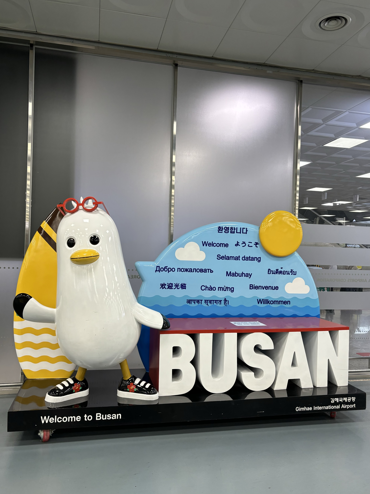

釜山-城市介紹
釜山廣域市為大韓民國第二大城市，東北亞海洋首都，人口約336萬，面積約770平方公里，文化底蘊深厚，是為青年敞開未來的智能城市。市花為山茶花，市木為山茶木，市鳥則為海鷗。
具有代表性的「釜山港」自1876年開港，為韓國第一大進出貿易港口，亦是全球智能港。釜山廣域市曾舉辦2002年「世界杯足球賽」（FIFA World Cup）、2002年「亞洲運動會」（Asian Games）、2005年「亞太經濟合作會議」（APEC）及2014年、2019年「東南亞國家協會」（ASEAN）高峰會等國際活動，在舉辦會展豐富經驗的基礎上，加上展覽館等基礎設施和人力資源，已發展為世界性會展城市。
釜山廣域市陸、海、空交通便捷，並於國際物流、金融、通訊等網路系統蓬勃發展，現已成為東北亞的門戶城市及環太平洋的交流窗口。
釜山廣域市不僅富有得天獨厚的自然環境，大海、江河與山融為一體，亦擁有豐富多樣的觀光基礎建設。2020年，韓國文化體育觀光部評選該市為「國際觀光城市」。

釜山吉祥物 - Boogi
結合釜山象徵性的代表物海鷗及山茶花，頂著一頭因海風吹成的天然飛機頭，圓圓黑黑的小眼睛還有個只喜歡說真話的黃色嘴巴，腳上穿著世上獨一無二、Boogi親自設計的冬柏花圖案鞋，頭上戴著可以獲得最新情報的紅色智慧型眼鏡。在釜山土生土長的Boogi個性十分親民、活潑。
